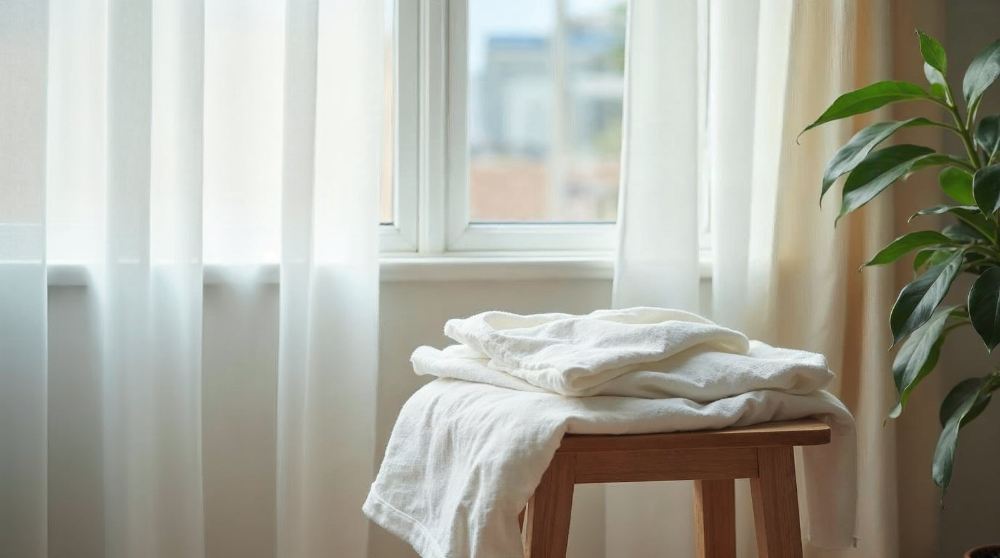
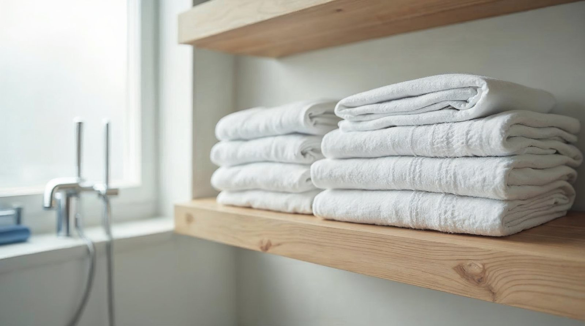
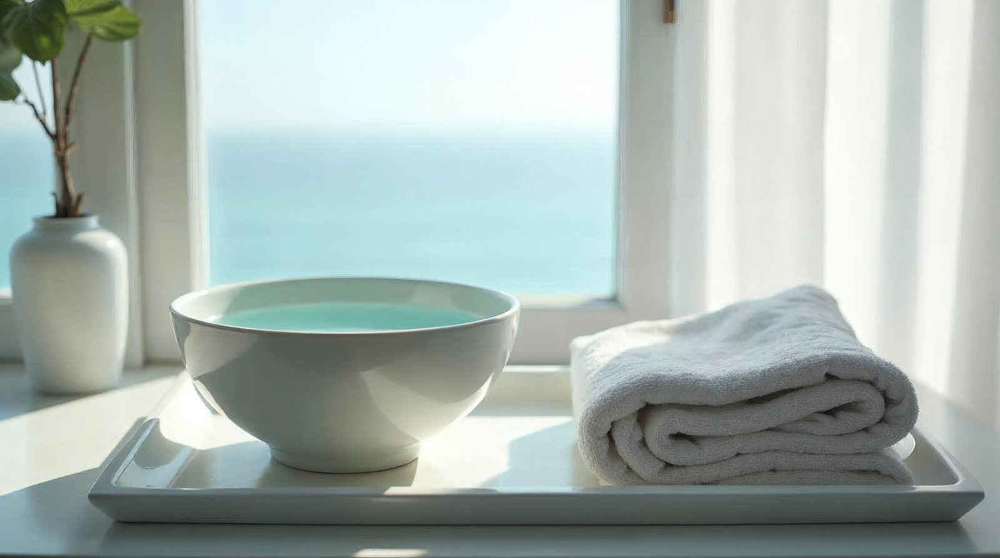
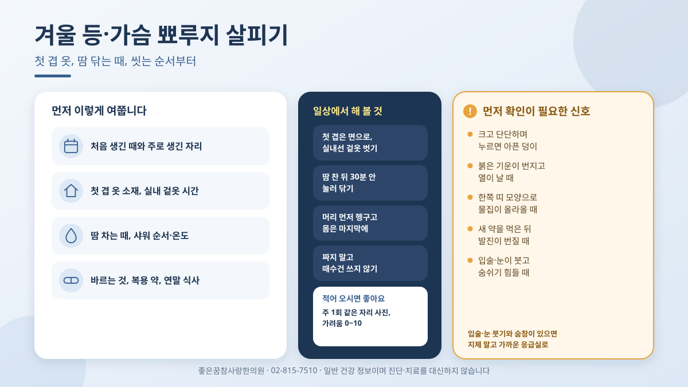

이종호 한의사 감수좋은꿈참사랑한의원 대표원장 (한의사 면허번호 19769)발행 2026-11-28 · 수정 2026-11-28
이 글의 차례
겨울이 깊어지면 출퇴근길 추위를 견디려고 발열 내의 위에 니트를 입고 두꺼운 패딩까지 걸치는 날이 많아집니다. 그런데 막상 난방이 센 지하철과 사무실, 학원 강의실에 들어가면 등과 가슴에 땀이 차는데도 겉옷을 벗기 번거로워 그대로 지내기 쉽습니다.
그렇게 몇 주가 지나면 등 위쪽과 어깨, 가슴 가운데에 붉은 좁쌀이나 뾰루지가 올라오고, 가방끈과 속옷 밴드가 닿는 자리를 따라 가렵거나 따끔거리는 분이 있습니다. 땀과 피지가 몸에 붙는 합성섬유 속에 갇혀 털구멍이 막히고, 옷과 가방끈이 같은 자리를 계속 문지르면 피부가 예민해지기 때문입니다.
대개는 피부에 닿는 첫 겹의 소재를 바꾸고, 실내에서는 겉옷을 바로 벗고, 땀이 난 뒤 30분 안에 닦거나 갈아입고, 씻는 순서를 바꾸는 것만으로도 2~4주 사이에 조금씩 가라앉는 경우가 많습니다.
다만 크고 단단하며 아픈 덩이가 생기거나, 붉은 기운이 번지며 열이 나거나, 몸 한쪽에 띠 모양 물집이 올라온다면 생활 조절로 버티지 말고 먼저 확인이 필요합니다.
왜 겨울에 등과 가슴에 뾰루지가 늘어날까요
- 등과 가슴은 얼굴과 함께 피지가 많이 나오는 곳입니다. 겨울에도 피지는 꾸준히 나오는데, 두꺼운 옷 속에서는 공기가 잘 통하지 않아 피지와 땀이 피부 위에 오래 머뭅니다.
- 발열 내의는 몸에서 나오는 수분을 흡수해 열을 내는 섬유로 만든 경우가 많고, 몸에 착 붙게 입습니다. 바깥에서는 따뜻하지만, 난방이 센 실내에서 오래 입고 있으면 땀이 차고 잘 마르지 않아 털구멍이 막히기 쉽습니다.
- 바깥은 춥고 실내는 더운 겨울에는 하루에도 몇 번씩 땀이 났다 식기를 되풀이합니다. 땀이 마르며 남은 소금기와 피지가 섞이면 피부가 예민해집니다.
- 백팩 끈, 크로스백 끈, 속옷 밴드, 의자 등받이처럼 같은 자리를 계속 누르고 문지르는 것들이 있습니다. 마찰과 압박이 이어지는 자리를 따라 뾰루지가 줄지어 올라오는 경우가 많습니다.
- 추워서 샤워 횟수를 줄이거나, 운동 뒤 씻지 않고 패딩을 입고 귀가하는 날이 늘어납니다. 반대로 뜨거운 물로 오래 씻고 등을 세게 밀면 피부 겉이 상해 오히려 더 예민해질 수 있습니다.
- 샴푸와 린스를 헹군 물이 등과 가슴을 타고 흐르며 남으면, 그 성분이 털구멍을 막는 데 보탬이 될 수 있습니다.
- 연말 모임으로 기름진 음식과 단 음료, 술이 이어지고 잠이 부족해지는 시기와 겹치면, 피부가 평소보다 쉽게 뒤집어지는 분도 있습니다.
- 한의학에서는 겉은 꽁꽁 싸매 막혀 있고 속에는 열이 쌓여 밖으로 잘 빠지지 못할 때 피부에 붉은 열꽃처럼 드러난다고 보기도 합니다. 그래서 피부만이 아니라 땀, 소화, 대변, 잠, 몸의 열감까지 함께 살핍니다.

어떤 뾰루지인지 나눠 볼까요
- 여드름 모양은 크기가 제각각이고, 하얗거나 까만 점처럼 막힌 털구멍(면포)이 섞여 있습니다. 붉게 부어오른 것과 고름이 잡힌 것이 함께 보이기도 합니다.
- 털구멍 염증(모낭염)은 털이 난 자리를 중심으로 작은 고름 물집이 생기고, 따끔하거나 가려울 수 있습니다. 제모나 면도를 한 자리, 꽉 끼는 옷이 쓸리는 자리에 잘 생깁니다.
- 곰팡이 쪽 털구멍 염증은 크기가 고른 붉은 좁쌀이 등 위쪽과 가슴, 어깨에 무리 지어 올라오고, 가려움이 뚜렷하며 땀을 많이 흘린 뒤 심해지는 경향이 있습니다. 일반 여드름 관리로 잘 줄지 않는다면 피부과에서 확인하는 편이 좋습니다.
- 땀띠는 땀이 찬 직후 아주 작은 물집이나 좁쌀이 생기고, 시원하게 해 주면 하루 이틀 사이에 빠르게 줄어듭니다.
- 옷의 소재나 세제가 닿는 자리를 따라 붉고 가려운 반점이 넓게 생긴다면 접촉 피부염일 수 있어, 옷과 세제를 바꿔 보며 살핍니다.
- 몸 한쪽에 띠 모양으로 따끔거리거나 화끈거리다 물집이 무리 지어 올라온다면 대상포진일 수 있어 빨리 진료를 받습니다.
먼저 이렇게 여쭙니다
- 뾰루지가 처음 보인 것은 언제쯤인가요? 등, 가슴, 어깨 가운데 어디에 가장 많은가요?
- 가려운가요, 따끔한가요, 눌렀을 때 아픈가요?
- 겨울에 주로 어떤 옷을 겹쳐 입으시나요? 피부에 바로 닿는 첫 겹은 어떤 소재인가요?
- 실내에 들어가서도 겉옷을 입고 계시는 편인가요? 하루 중 땀이 차는 때는 언제인가요?
- 가방은 어떤 종류를 어느 쪽으로 메시나요?
- 샤워는 얼마나 자주, 몇 분 정도, 어떤 순서로 하시나요? 때를 미시나요?
- 최근에 바디로션, 세제, 섬유유연제를 바꾸셨나요?
- 운동 뒤 바로 씻으시나요?
- 요즘 소화와 대변, 잠, 술과 단 음식은 어떤가요? 복용 중인 약이나 바르는 연고가 있나요?

일상에서 먼저 해 볼 수 있는 것
옷을 겹쳐 입는 순서 바꾸기
- 피부에 바로 닿는 첫 겹은 면처럼 땀을 흡수하고 덜 답답한 소재로 바꿉니다. 발열 내의는 바깥에 오래 있는 날에만 입고, 실내에 주로 머무는 날은 빼 봅니다.
- 겉옷은 앞을 열고 닫기 쉬운 지퍼형을 고르고, 지하철이나 버스, 사무실에 들어서면 바로 앞을 열거나 벗습니다.
- 목까지 올라오는 두꺼운 니트 한 벌보다 얇은 옷을 여러 겹 입어, 실내에서 한 겹씩 벗을 수 있게 합니다.
- 가방은 한쪽 어깨만 쓰지 않고, 무거운 날에는 끈이 넓은 가방을 고르거나 손에 드는 시간을 섞습니다.
땀이 난 뒤 30분 안에
- 땀이 찼다고 느끼면 30분 안에 화장실에서 부드러운 수건이나 무향 물티슈로 가볍게 눌러 닦습니다. 문지르지 않습니다.
- 회사나 학원 사물함에 여벌 면 티셔츠를 하나 두고, 땀을 많이 흘린 날은 갈아입습니다.
- 실내 운동 뒤에는 젖은 옷 위에 패딩을 입고 귀가하지 말고, 가능하면 운동한 곳에서 씻고 마른 옷으로 갈아입습니다.
씻는 순서와 방법
- 미지근한 물로 10분 안쪽으로 씻습니다. 뜨거운 물로 오래 씻으면 피부가 건조해져 가려움이 늘 수 있습니다.
- 머리를 먼저 감고 샴푸와 린스를 충분히 헹군 뒤, 마지막에 몸을 씻어 등과 가슴에 남은 성분을 흘려보냅니다.
- 등은 거친 때수건으로 밀지 말고, 거품을 낸 부드러운 샤워 타월이나 손으로 가볍게 씻습니다. 손이 닿지 않는 곳은 손잡이 달린 부드러운 솔을 씁니다.
- 씻은 뒤에는 수건으로 두드리듯 물기를 닦고, 기름진 크림이나 오일보다 가벼운 로션을 얇게 바릅니다.
세탁과 잠자리
- 몸에 바로 닿는 옷은 하루 입고 빨고, 섬유유연제는 줄이며 헹굼을 한 번 더 합니다.
- 전기장판과 보일러 온도를 너무 높이지 않아 자는 동안 등에 땀이 차지 않게 합니다. 잠옷은 면 소재가 편합니다.
- 베갯잇과 이불 커버는 일주일에 한 번 갈아 줍니다.
손대지 않기
- 뾰루지를 짜거나 손톱으로 뜯지 않습니다. 등처럼 잘 보이지 않는 곳은 더 깊게 상처가 나기 쉽고 자국이 오래 남을 수 있습니다.
- 가려울 때는 긁기보다 시원한 물수건을 1~2분 대 줍니다.
- 치약이나 알코올처럼 자극이 강한 것을 바르지 않습니다.
연말 생활 리듬
- 기름진 야식과 단 음료, 술이 이어진 주에 뾰루지가 늘었다면 기록해 두고 양을 줄여 봅니다.
- 잠자리 시각을 일정하게 지키고, 물은 낮 동안 나누어 마십니다.
상황별 예시
- 예를 들어 노량진 학원 강의실에서 하루 종일 패딩을 입은 채 앉아 공부하는 수험생인 경우, 의자 등받이와 패딩 사이에 땀이 차서 등 아래쪽과 허리선에 뾰루지가 생기기 쉽습니다. 강의실에 들어서면 패딩은 벗어 의자에 걸고, 무릎 담요로 체온을 지키며, 점심시간에 한 번 등 쪽 땀을 닦아 봅니다.
- 예를 들어 상도역에서 지하철로 출퇴근하며 무거운 백팩을 매일 메는 직장인인 경우, 가방끈이 지나가는 어깨와 날개뼈 위쪽에 뾰루지가 줄지어 올라올 수 있습니다. 지하철에 타면 가방을 앞으로 돌려 들거나 선반에 올리고, 끈이 넓고 부드러운 가방으로 바꿔 봅니다.
- 예를 들어 퇴근 뒤 헬스장에서 운동하고 땀에 젖은 발열 내의 위에 패딩을 입고 귀가하는 경우, 집까지 가는 30분 동안 땀이 식으며 등과 가슴에 그대로 머뭅니다. 운동한 곳에서 짧게라도 씻고 마른 면 티셔츠로 갈아입은 뒤 귀가합니다.
- 예를 들어 추워서 전기장판을 높은 온도로 켜고 두꺼운 수면 잠옷을 입고 자는 경우, 자는 동안 등에 땀이 차 아침마다 등이 가렵고 뾰루지가 늘 수 있습니다. 전기장판은 잠들기 전 미리 데우고 잘 때는 낮추거나 끄며, 잠옷은 얇은 면으로 바꿉니다.
자주 하는 오해
- 등 뾰루지는 씻지 않아서 생긴다고 여기고 세게 문질러 씻는 분이 많습니다. 세게 밀수록 피부 겉이 상해 더 예민해질 수 있어, 부드럽게 씻는 것이 좋습니다.
- 뜨거운 물로 오래 씻어야 털구멍이 열려 깨끗해진다고 생각하기 쉽지만, 오히려 피부가 건조해지고 가려움이 늘 수 있습니다.
- 겨울에는 땀을 덜 흘리니 땀 때문은 아닐 거라 여기기 쉽지만, 두꺼운 옷 속과 난방이 센 실내에서는 생각보다 땀이 많이 찹니다.
- 등에 난 것도 여드름이니 짜 버리면 빨리 가라앉는다고 생각하는 분도 있습니다. 손이 잘 닿지 않는 곳이라 상처가 깊어지고 자국이 남기 쉽습니다.
- 모두 같은 여드름이라고 여기기도 하지만, 곰팡이 쪽 털구멍 염증이나 접촉 피부염처럼 관리 방법이 다른 경우가 있어 모양과 가려움을 함께 살펴야 합니다.
스스로 점검해 보세요
- 겨울에 발열 내의나 몸에 붙는 합성섬유 옷을 첫 겹으로 입는다.
- 난방이 센 실내에서도 겉옷을 입고 있는 시간이 길다.
- 가방끈이나 속옷 밴드가 닿는 자리를 따라 뾰루지가 있다.
- 운동 뒤 씻지 않고 땀에 젖은 옷 그대로 귀가하는 날이 있다.
- 몸을 먼저 씻고 마지막에 린스를 헹군다.
- 때수건으로 등을 세게 민다.
- 연말 들어 야식과 술, 단 음료가 늘었다.
한의원에서 함께 살필 수 있는 경우
- 옷과 씻는 방법을 바꿔도 등과 가슴의 뾰루지가 4주 넘게 이어지는 경우
- 겨울마다 비슷한 자리에 뾰루지가 반복되는 경우
- 땀이 유난히 많거나, 몸에 열감이 있고 얼굴이 쉽게 달아오르는 경우
- 소화가 잘 안 되고 대변이 고르지 않으며 피부가 함께 뒤집어지는 경우
- 가려움 때문에 잠을 설치거나 연말 피로가 겹쳐 피부가 예민해진 경우
좋은꿈참사랑한의원에서는 첫 방문 때 문진으로 뾰루지가 언제 어디에 생겼는지, 겨울에 입는 옷과 땀이 차는 때, 씻는 습관과 바르는 것을 먼저 여쭙고, 맥부터 짚어 봅니다. 진맥으로 몸 안에 열이 쌓인 모습은 없는지, 몸이 얼마나 지쳐 있는지 살피고, 뾰루지의 모양과 퍼진 범위, 가려움의 정도를 직접 확인합니다.
혀의 색과 모양, 소화와 대변, 잠과 땀도 함께 여쭙습니다. 곰팡이 쪽 염증이나 다른 피부 질환이 의심되어 검사가 필요해 보이면 피부과 진료를 함께 권해 드립니다. 그 뒤 옷과 씻는 순서 등 생활에서 바꿔 볼 것과 한의원에서 함께 살필 순서를 정하고, 다음 진료에서는 지난번 말씀하신 뾰루지의 범위와 가려움, 땀이 찬 날을 이어서 여쭈어 비교합니다.

얼마나 지켜보고 언제 상담할까요
- 옷과 땀 관리, 씻는 순서를 바꾼 뒤 2~4주는 사진과 함께 기록하며 지켜봅니다. 피부가 새로 자리를 잡는 데에는 몇 주가 걸립니다.
- 4주가 지나도 뾰루지가 비슷하거나 번진다면 진료를 받아 함께 살펴보시길 권합니다.
- 가려움이 심해 잠을 설치거나, 크기가 고른 붉은 좁쌀이 무리 지어 계속 늘어난다면 기간을 기다리지 않고 상담을 받아 보셔도 좋습니다.
- 크고 아픈 덩이, 번지는 붉은 기운과 열, 띠 모양 물집이 보이면 지켜보지 말고 먼저 확인합니다.
이렇게 기록해 오시면 상담이 쉬워집니다
- 뾰루지가 처음 생긴 날과 주로 생긴 자리
- 같은 자리를 같은 거리에서 일주일에 한 번 찍은 사진
- 그날 입은 첫 겹 옷의 소재와 겉옷을 입고 있던 시간
- 땀이 많이 찬 날과 상황(운동, 난방이 센 곳, 잠자리)
- 가려움 정도를 0~10 숫자로, 샤워 횟수와 순서
- 바르는 연고와 화장품, 복용 중인 약, 술과 야식이 많았던 날
이런 증상은 먼저 확인이 필요합니다
- 크고 단단하며 누르면 아픈 덩이나 고름 주머니가 생기는 경우
- 뾰루지 주변으로 붉은 기운이 번지고 뜨거우며 열이나 오한이 나는 경우
이런 신호가 있으면 한의원보다 가까운 병원이나 응급실을 먼저 찾으세요.
관련 글
- 울이나 합성섬유 옷을 입으면 피부가 따갑고 가려울 때는 어떻게 살피나요?
- 얼굴에 여드름이 반복될 때는 생활에서 무엇을 확인하나요?
- 보일러를 세게 틀고 자면 등과 종아리가 가려운 것은 어떻게 살피나요?

여쭙는 것
- 뾰루지가 처음 보인 것은 언제쯤인가요? 등, 가슴, 어깨 가운데 어디에 가장 많은가요?
- 가려운가요, 따끔한가요, 눌렀을 때 아픈가요?
- 겨울에 주로 어떤 옷을 겹쳐 입으시나요? 피부에 바로 닿는 첫 겹은 어떤 소재인가요?
생활에서 해 볼 것
- 피부에 바로 닿는 첫 겹은 면처럼 땀을 흡수하고 덜 답답한 소재로 바꿉니다. 발열…
- 겉옷은 앞을 열고 닫기 쉬운 지퍼형을 고르고, 지하철이나 버스, 사무실에 들어서면…
- 목까지 올라오는 두꺼운 니트 한 벌보다 얇은 옷을 여러 겹 입어, 실내에서 한 겹씩…
한의원에서 함께 살필 것
- 옷과 씻는 방법을 바꿔도 등과 가슴의 뾰루지가 4주 넘게 이어지는 경우
- 겨울마다 비슷한 자리에 뾰루지가 반복되는 경우
- 땀이 유난히 많거나, 몸에 열감이 있고 얼굴이 쉽게 달아오르는 경우
먼저 확인이 필요한 신호
- 크고 단단하며 누르면 아픈 덩이나 고름 주머니가 생기는 경우
- 뾰루지 주변으로 붉은 기운이 번지고 뜨거우며 열이나 오한이 나는 경우
한눈에 보는 표
| 구분 | 핵심 |
|---|---|
| 여쭙는 것 | 뾰루지가 처음 보인 것은 언제쯤인가요? 등, 가슴, 어깨 가운데 어디에 가장 많은가요? 가려운가요, 따끔한가요, 눌렀을 때 아픈가요? |
| 생활에서 해 볼 것 | 피부에 바로 닿는 첫 겹은 면처럼 땀을 흡수하고 덜 답답한 소재로 바꿉니다. 발열 내의는 바깥에 오래 있는 날에만 입고, 실내에 주로 머무는 날은 빼 봅니다. 겉옷은 앞을 열고 닫기 쉬운 지퍼형을 고르고, 지하철이나 버스, 사무실에 들어서면 바로 앞을 열거나 벗습니다. |
| 한의원에서 함께 살필 것 | 옷과 씻는 방법을 바꿔도 등과 가슴의 뾰루지가 4주 넘게 이어지는 경우 겨울마다 비슷한 자리에 뾰루지가 반복되는 경우 |
| 먼저 확인이 필요한 신호 | 크고 단단하며 누르면 아픈 덩이나 고름 주머니가 생기는 경우 뾰루지 주변으로 붉은 기운이 번지고 뜨거우며 열이나 오한이 나는 경우 |
자주 묻는 질문
발열 내의를 아예 입지 말아야 하나요?
그렇지는 않습니다. 바깥에 오래 있는 날에는 도움이 될 수 있으니, 실내에 주로 머무는 날은 빼거나 첫 겹을 면으로 바꾸고 실내에서는 겉옷을 바로 벗는 방식으로 조절해 보세요.
등 뾰루지는 때를 밀면 줄어들지 않나요?
세게 밀면 피부 겉이 상해 오히려 더 예민해질 수 있습니다. 미지근한 물로 10분 안쪽, 거품과 부드러운 타월로 가볍게 씻는 편이 좋습니다.
여드름인지 다른 것인지 어떻게 알 수 있나요?
크기가 제각각이고 막힌 털구멍이 섞여 있으면 여드름 모양에 가깝고, 크기가 고른 붉은 좁쌀이 무리 지어 가렵다면 곰팡이 쪽 털구멍 염증일 수 있습니다. 모양만으로 나누기 어려운 경우가 많아 피부과 확인이 도움이 됩니다.
머리 감는 순서가 정말 상관이 있나요?
샴푸와 린스를 헹군 물이 등과 가슴에 남으면 털구멍을 막는 데 보탬이 될 수 있어, 머리를 먼저 감고 마지막에 몸을 씻는 순서를 권합니다.
한의원에서는 이런 피부 불편을 어떻게 살피나요?
뾰루지가 생긴 때와 자리, 옷과 땀, 씻는 습관을 먼저 여쭙고 맥부터 짚어 몸의 열감과 지친 정도를 살핍니다. 소화와 대변, 잠을 함께 확인하고, 피부과 검사가 필요해 보이면 함께 권해 드립니다.
좋은꿈참사랑한의원은 재진 때 지난번 이야기부터 이어서 여쭙니다. 진료시간과 예약은 오시는 길에서 확인하세요.
어디서 상담받을 수 있나요?
좋은꿈참사랑한의원은 서울 동작구 만양로2길 2 신성빌딩 3층·5층(서울 동작구 상도동, 7호선 상도역 3번 출구 근처)에 있습니다. 한의사 3명(이종호 대표원장, 조영기 수석진료원장, 정원영 진료원장)이 진료합니다. 진료시간은 평일 09:30~20:00(점심 13:00~14:00), 토·일·공휴일 09:30~15:00이며, 방문 전 전화로 확인을 권합니다. 예약은 네이버 예약, 카카오톡 상담, 전화 02-815-7510로 받습니다.
이 글은 일반적인 건강 정보이며 개인의 진단이나 치료를 대신하지 않습니다. 증상이 있거나 복용 중인 약이 있다면 진료를 통해 확인하세요. 치료 효과는 개인마다 다를 수 있습니다.
작성 기준: 일반적으로 알려져 있는 건강 정보를 참고해 정리했습니다(대표원장 감수). 증상 기록은 1~2주 동안 하루 1회, 비슷한 시간에 적어 오시면 지난 상태와 비교하기 쉽습니다.